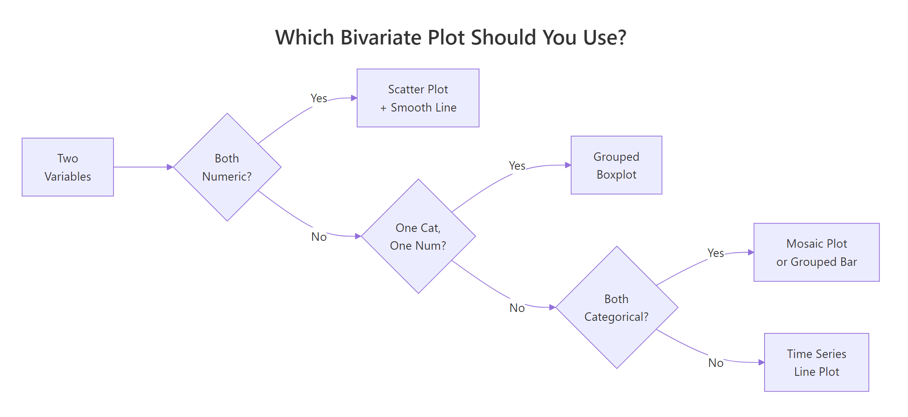
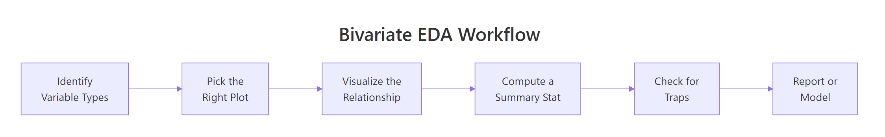
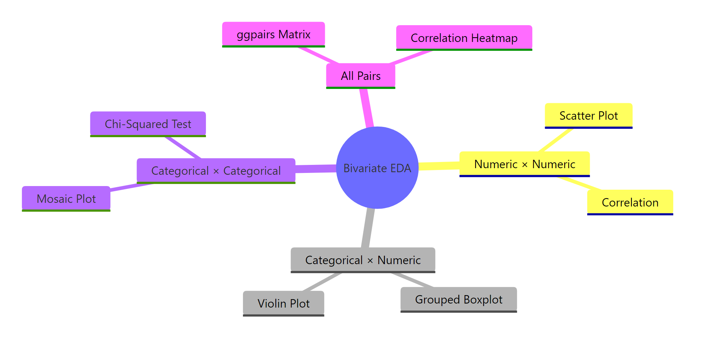

Bivariate EDA in R: Find Relationships Between Variables Before You Model Them
Bivariate EDA examines how two variables move together — through scatter plots, grouped boxplots, bar charts, and correlation measures — so you can spot relationships, confounders, and surprises before building any model.
How Do You Explore Two Numeric Variables?
Before you model anything, you need to know which variables are actually related. Bivariate EDA answers that question with the right plot paired with the right summary statistic — and the choice depends on whether each variable is numeric or categorical. Let's start with the most common scenario: two numeric variables and a scatter plot that reveals their relationship instantly.
# Scatter plot: engine size vs. highway fuel economy
library(ggplot2)
library(dplyr)
ggplot(mpg, aes(x = displ, y = hwy)) +
geom_point(alpha = 0.6) +
geom_smooth(method = "lm", se = TRUE, color = "steelblue") +
labs(
title = "Larger Engines Get Worse Highway Mileage",
x = "Engine Displacement (litres)",
y = "Highway MPG"
) +
theme_minimal()
#> A scatter plot appears with a clear downward trend line.
#> Cars with smaller engines (1.5-2.5L) cluster at 25-45 mpg,
#> while larger engines (5-7L) cluster at 12-20 mpg.
The downward-sloping line tells you immediately: bigger engines burn more fuel on the highway. The grey confidence band is narrow in the middle (where most data sits) and wider at the extremes — that's your uncertainty growing where data is sparse.
Now let's put a number on that relationship. A correlation coefficient ranges from -1 (perfect negative) to +1 (perfect positive), with 0 meaning no linear relationship.
Both Pearson and Spearman confirm a strong negative correlation. Spearman's rho is slightly stronger here (-0.833 vs -0.766) because it captures the monotonic relationship even if the curve isn't perfectly straight. The p-values are astronomically small — this relationship is not a coincidence.
Key Insight
Correlation measures linear strength only. A perfect U-shaped curve can produce r = 0. Always plot first, then compute — never rely on the number alone.
Sometimes a third variable hides inside a bivariate relationship. Colouring by drv (drive type) reveals subgroup trends that the overall scatter plot blurs together.
# Colour by drive type to reveal subgroup patterns
ggplot(mpg, aes(x = displ, y = hwy, color = drv)) +
geom_point(alpha = 0.7) +
geom_smooth(method = "lm", se = FALSE) +
labs(
title = "Drive Type Splits the Relationship",
x = "Engine Displacement (litres)",
y = "Highway MPG",
color = "Drive"
) +
theme_minimal()
#> Three separate trend lines appear:
#> Front-wheel (f): steep negative slope, small engines
#> 4-wheel (4): moderate negative slope, mid-range engines
#> Rear-wheel (r): flatter slope, large engines only
Now you can see that front-wheel drive cars dominate the small-engine, high-mpg corner, while rear-wheel drive cars cluster among large engines. The overall trend isn't wrong — but it's masking three distinct stories.
Tip
Use method = "loess" in geom_smooth() when the relationship is clearly curved. LOESS fits a flexible local regression instead of forcing a straight line through nonlinear data.
Try it: Compute both Pearson and Spearman correlation between disp and mpg in the mtcars dataset. Is Spearman stronger than Pearson here too?
Explanation: Spearman (-0.904) is stronger than Pearson (-0.848) because the relationship between displacement and mpg is monotonic but slightly curved. Spearman handles that curvature better since it works with ranks, not raw values.
What If One Variable Is Categorical and the Other Numeric?
When one variable is a group label — like vehicle class, species, or treatment arm — and the other is a measurement, you want to see how distributions shift across groups. The grouped boxplot is the workhorse here: it shows median, spread, and outliers in one compact visual.
# Grouped boxplot: vehicle class vs highway mpg
library(forcats)
ggplot(mpg, aes(x = fct_reorder(class, hwy, .fun = median), y = hwy)) +
geom_boxplot(fill = "lightblue", outlier.color = "red") +
coord_flip() +
labs(
title = "Compact and Subcompact Cars Lead on Highway Mileage",
x = "Vehicle Class",
y = "Highway MPG"
) +
theme_minimal()
#> Seven horizontal boxplots appear, ordered by median hwy.
#> Pickup trucks sit at the bottom (~17 mpg median).
#> Subcompact and compact cars sit at the top (~28 mpg median).
Ordering the categories by median (using fct_reorder()) makes the comparison instant — you don't have to scan alphabetically. Pickups and SUVs cluster low; compact and midsize cars sit high. The red dots are outliers — individual cars that deviate from their class's pattern.
Warning
Boxplots hide multimodal distributions. If a group has two peaks (say, hybrid and non-hybrid subcompacts), the boxplot blends them into one box. Add a violin or jitter layer to see the full shape.
Violin plots reveal the density shape that boxplots hide. Overlaying jitter points shows each individual observation — especially valuable for small samples where the density estimate gets noisy.
# Violin + jitter: iris sepal length by species
ggplot(iris, aes(x = Species, y = Sepal.Length, fill = Species)) +
geom_violin(alpha = 0.5) +
geom_jitter(width = 0.15, alpha = 0.5, size = 1.5) +
labs(
title = "Setosa Has Shorter Sepals with Less Variability",
x = "Species",
y = "Sepal Length (cm)"
) +
theme_minimal() +
theme(legend.position = "none")
#> Three violin shapes appear with jitter dots overlaid.
#> Setosa: narrow, centered around 5.0 cm.
#> Versicolor: wider, centered around 5.9 cm.
#> Virginica: widest, centered around 6.6 cm with some outliers above 7.5.
The violin shape confirms that all three species have roughly unimodal distributions, but virginica has the widest spread. The jitter dots let you see that setosa's 50 observations cluster tightly — the violin isn't misleading.
Sometimes you want a cleaner summary: just the group means with error bars. The stat_summary() function handles this without any manual data wrangling.
# Mean ± standard error by vehicle class
ggplot(mpg, aes(x = fct_reorder(class, hwy, .fun = mean), y = hwy)) +
stat_summary(fun = mean, geom = "point", size = 3, color = "steelblue") +
stat_summary(fun.data = mean_se, geom = "errorbar", width = 0.2, color = "steelblue") +
coord_flip() +
labs(
title = "Mean Highway MPG by Vehicle Class (±1 SE)",
x = "Vehicle Class",
y = "Highway MPG"
) +
theme_minimal()
#> Points with error bars appear for each class.
#> Compact: ~28.3 ± 0.7 mpg
#> 2seater: ~24.8 ± 0.5 mpg
#> SUV: ~18.1 ± 0.5 mpg
Error bars that don't overlap suggest the group means are meaningfully different. The compact class clearly separates from SUVs and pickups — but midsize and compact overlap, so you'd need a formal test to distinguish them.
Tip
Reorder categorical levels by the numeric summary using fct_reorder() for instant visual clarity. Alphabetical order rarely helps — sorting by median or mean makes the pattern jump out.
Try it: Create a grouped boxplot of iris Sepal.Length by Species. Which species has the highest median?
# Try it: boxplot of Sepal.Length by Species
ggplot(iris, aes(x = Species, y = Sepal.Length)) +
# your code here
theme_minimal()
#> Expected: Virginica has the highest median
Click to reveal solution
ggplot(iris, aes(x = Species, y = Sepal.Length, fill = Species)) +
geom_boxplot() +
labs(title = "Sepal Length by Species", y = "Sepal Length (cm)") +
theme_minimal()
#> Setosa median: ~5.0, Versicolor: ~5.9, Virginica: ~6.6
Explanation: Virginica has the highest median sepal length at approximately 6.6 cm, followed by versicolor (~5.9 cm) and setosa (~5.0 cm). The boxes don't overlap much, suggesting species is a strong predictor of sepal length.
How Do You Compare Two Categorical Variables?
When both variables are categories — like vehicle class and drive type, or treatment and outcome — you need to see how frequencies cluster across combinations. A grouped bar chart shows raw counts; a proportional stacked bar reveals compositional differences.
# Grouped bar chart: vehicle class vs drive type
ggplot(mpg, aes(x = class, fill = drv)) +
geom_bar(position = "dodge") +
labs(
title = "SUVs Favour 4-Wheel Drive; Compacts Favour Front-Wheel",
x = "Vehicle Class",
y = "Count",
fill = "Drive Type"
) +
theme_minimal() +
theme(axis.text.x = element_text(angle = 45, hjust = 1))
#> Grouped bars appear side by side for each class.
#> SUV: 4-wheel dominates (~50 cars), front-wheel is rare.
#> Compact: front-wheel dominates (~35 cars), 4-wheel is sparse.
#> 2seater: only rear-wheel drive.
The pattern is striking: SUVs are overwhelmingly 4-wheel drive, compacts are almost entirely front-wheel, and 2-seaters are all rear-wheel. That's a strong association between class and drive type — not independent at all.
Let's test that association formally with a contingency table and chi-squared test. The chi-squared test asks: "Could this frequency pattern have appeared by chance if class and drive type were truly independent?"
A chi-squared statistic of 291.6 with 12 degrees of freedom and a p-value near zero means these variables are very strongly associated. Vehicle class and drive type are far from independent.
Note
Chi-squared test needs expected cell counts of at least 5. For small samples or sparse tables, use fisher.test() instead — it computes exact probabilities without that assumption.
A proportional stacked bar chart normalizes each class to 100%, making it easy to compare compositions even when group sizes differ.
# Proportional stacked bar: composition of drive type within each class
ggplot(mpg, aes(x = class, fill = drv)) +
geom_bar(position = "fill") +
scale_y_continuous(labels = scales::percent) +
labs(
title = "Drive Type Composition Varies Dramatically by Class",
x = "Vehicle Class",
y = "Proportion",
fill = "Drive Type"
) +
theme_minimal() +
theme(axis.text.x = element_text(angle = 45, hjust = 1))
#> Stacked bars fill to 100% for each class.
#> Pickup: 100% four-wheel.
#> Minivan: 100% front-wheel.
#> SUV: ~82% four-wheel, ~18% rear-wheel.
Now the compositional story is crystal clear: pickups are exclusively 4-wheel, minivans are exclusively front-wheel, and SUVs are overwhelmingly 4-wheel with a rear-wheel minority. This proportional view is far more informative than raw counts when group sizes vary.
Key Insight
Position = "fill" reveals proportional patterns that raw counts hide. A class with 50 cars and one with 11 cars look incomparable in raw counts, but their internal compositions become directly comparable when normalized to 100%.
Try it: Build a contingency table of mpg for the top 5 manufacturers (by count) vs drv. Which manufacturer has the highest proportion of 4-wheel drive vehicles?
# Try it: top 5 manufacturers vs drive type
ex_top5 <- mpg |>
count(manufacturer, sort = TRUE) |>
slice_head(n = 5) |>
pull(manufacturer)
ex_sub <- mpg |> filter(manufacturer %in% ex_top5)
# Build the table and find the highest 4wd proportion
# your code here
Click to reveal solution
ex_top5 <- mpg |>
count(manufacturer, sort = TRUE) |>
slice_head(n = 5) |>
pull(manufacturer)
ex_sub <- mpg |> filter(manufacturer %in% ex_top5)
ex_tbl <- table(ex_sub$manufacturer, ex_sub$drv)
prop.table(ex_tbl, margin = 1)
#> 4 f r
#> dodge 0.6486 0.0000 0.3514
#> ford 0.6000 0.0000 0.4000
#> chevrolet 0.5263 0.0000 0.4737
#> toyota 0.3235 0.5000 0.1765
#> volkswagen 0.0000 1.0000 0.0000
# Dodge has the highest 4-wheel drive proportion at ~65%
Explanation: Using prop.table() with margin = 1 normalizes each row to proportions. Dodge leads with ~65% four-wheel drive, followed by Ford (~60%) and Chevrolet (~53%). Volkswagen is exclusively front-wheel drive.
Which Plot Should You Pick for Each Variable Pair?
The single most important decision in bivariate EDA is matching the plot to the variable types. Here's the decision table to bookmark.
Var X
Var Y
Best Plot
Summary Stat
R Function
Numeric
Numeric
Scatter + smooth line
Pearson or Spearman r
cor(), cor.test()
Categorical
Numeric
Grouped boxplot
Group medians / means
geom_boxplot(), aggregate()
Categorical
Categorical
Grouped bar or stacked bar
Chi-squared statistic
chisq.test(), geom_bar()
Time / ordered
Numeric
Line chart
Trend slope
geom_line()

Figure 1: Which bivariate plot to use, based on variable types.
Let's see all three plot types side by side on the same dataset. The patchwork package makes this effortless.
# Three plot types side by side
library(patchwork)
p1 <- ggplot(mpg, aes(displ, hwy)) +
geom_point(alpha = 0.5) +
geom_smooth(method = "lm", se = FALSE, color = "steelblue") +
labs(title = "Num × Num", x = "Displacement", y = "Highway MPG") +
theme_minimal(base_size = 10)
p2 <- ggplot(mpg, aes(fct_reorder(class, hwy, median), hwy)) +
geom_boxplot(fill = "lightblue") +
coord_flip() +
labs(title = "Cat × Num", x = "Class", y = "Highway MPG") +
theme_minimal(base_size = 10)
p3 <- ggplot(mpg, aes(class, fill = drv)) +
geom_bar(position = "fill") +
scale_y_continuous(labels = scales::percent) +
labs(title = "Cat × Cat", x = "Class", y = "Proportion") +
theme_minimal(base_size = 10) +
theme(axis.text.x = element_text(angle = 45, hjust = 1))
p1 + p2 + p3
#> Three plots appear side by side:
#> Left: scatter plot with negative trend
#> Middle: boxplots ordered by median
#> Right: proportional stacked bars
Seeing all three together reinforces the core lesson: the variable types dictate the plot, and the plot dictates which summary statistic to compute. Pick the wrong plot and you'll miss the pattern entirely.
Tip
When in doubt, start with ggpairs() — it picks the right plot for each variable pair automatically. You'll learn how in the next section.
Try it: Given a dataset with columns region (categorical) and sales (numeric), which plot would you choose and which summary statistic? Write the ggplot2 call.
# Try it: region (categorical) vs sales (numeric)
# What plot type? What summary stat?
# Write your ggplot2 code below:
# your code here
#> Expected: grouped boxplot + group medians
Click to reveal solution
# Categorical × Numeric = grouped boxplot
# Summary stat = group medians or means
# Example using mpg as a stand-in:
ggplot(mpg, aes(x = fct_reorder(manufacturer, hwy, median), y = hwy)) +
geom_boxplot(fill = "lightblue") +
coord_flip() +
labs(x = "Manufacturer", y = "Highway MPG") +
theme_minimal()
#> Boxplots ordered by median for each manufacturer
Explanation: Categorical x Numeric always calls for a grouped boxplot (or violin plot). The natural summary statistic is group medians (from the boxplot) or group means (with stat_summary()). Ordering by the numeric value makes the comparison instant.
How Do You Scan All Pairs at Once with ggpairs()?
When you have four or more variables, checking every pair one-by-one gets tedious fast. GGally's ggpairs() builds a scatterplot matrix that automatically picks the right chart for each variable combination: scatter plots for numeric × numeric, boxplots for categorical × numeric, and bar charts for categorical × categorical.
# ggpairs: automatic pair-wise EDA
library(GGally)
ggpairs(
mpg,
columns = c("displ", "hwy", "cty"),
aes(color = drv, alpha = 0.5),
upper = list(continuous = wrap("cor", size = 4)),
lower = list(continuous = wrap("smooth", method = "lm", se = FALSE)),
diag = list(continuous = wrap("densityDiag"))
) +
theme_minimal(base_size = 9)
#> A 3×3 matrix appears:
#> Diagonal: density plots for each variable, colored by drv
#> Upper triangle: correlation coefficients (e.g., displ-hwy: -0.77)
#> Lower triangle: scatter plots with linear smooth lines
Reading this matrix is straightforward: the diagonal shows each variable's distribution, the upper triangle gives you the correlation numbers, and the lower triangle shows the actual scatter plots. Colour-coding by drv reveals that front-wheel drive cars cluster in the low-displacement, high-mpg corner.
You can customize every panel. The upper triangle can show correlation coefficients, the lower can show scatter plots with smooth lines, and the diagonal can show densities or histograms.
# Customized ggpairs with iris: all 4 numeric columns
ggpairs(
iris,
columns = 1:4,
aes(color = Species, alpha = 0.5),
upper = list(continuous = wrap("cor", size = 3)),
lower = list(continuous = wrap("points", size = 0.8)),
diag = list(continuous = wrap("densityDiag"))
) +
theme_minimal(base_size = 8)
#> A 4×4 matrix appears with 3 species colored:
#> Petal.Length vs Petal.Width: r = 0.96 (strongest)
#> Sepal.Width vs Sepal.Length: r = -0.12 (weakest overall)
#> Clear species clustering visible in most panels
The iris matrix instantly reveals that petal dimensions (length and width) are almost perfectly correlated (r = 0.96) and provide strong species separation. Sepal width is the odd one out — weakly correlated with everything and overlapping across species.
Warning
ggpairs() gets slow with more than 8 variables — subset first. Each additional variable adds a full row and column to the matrix, so going from 5 to 10 variables quadruples the rendering time. For wide datasets, pick your most promising variables or use a correlation heatmap instead.
Try it: Run ggpairs() on iris with all 4 numeric columns, colored by Species. Which pair shows the strongest separation between species?
# Try it: ggpairs on iris
# Run it and identify the pair with the best species separation
ggpairs(iris, columns = 1:4, aes(color = Species))
#> Expected: Petal.Length vs Petal.Width shows the cleanest clusters
Click to reveal solution
ggpairs(iris, columns = 1:4, aes(color = Species, alpha = 0.5)) +
theme_minimal(base_size = 8)
#> Petal.Length × Petal.Width: three tight, non-overlapping clusters
#> r = 0.96 overall, but each species forms its own distinct cloud
Explanation: Petal.Length vs Petal.Width shows the strongest separation — the three species form nearly non-overlapping clusters. This makes sense because petal measurements vary most between species while sepal measurements overlap considerably.
What Traps Should You Watch for in Bivariate EDA?
Bivariate EDA can mislead if you don't watch for common pitfalls. The three biggest traps are Simpson's paradox, nonlinear relationships that correlation misses, and overplotting that hides density patterns.
Simpson's paradox is when an aggregate trend reverses once you split by a third variable. Let's simulate this to see it happen.
# Simpson's paradox: overall trend reverses within groups
set.seed(2024)
group_a <- data.frame(
x = rnorm(80, mean = 3, sd = 1),
group = "A"
)
group_a$y <- 2 * group_a$x + rnorm(80, sd = 0.8) + 10
group_b <- data.frame(
x = rnorm(80, mean = 7, sd = 1),
group = "B"
)
group_b$y <- 2 * group_b$x + rnorm(80, sd = 0.8) - 5
sim_data <- rbind(group_a, group_b)
# Overall: negative trend. Within groups: positive trend!
ggplot(sim_data, aes(x, y)) +
geom_point(aes(color = group), alpha = 0.6) +
geom_smooth(method = "lm", se = FALSE, color = "black", linetype = "dashed") +
geom_smooth(aes(color = group), method = "lm", se = FALSE) +
labs(
title = "Simpson's Paradox: The Aggregate Trend Lies",
subtitle = "Black dashed = overall (negative); colored = within-group (positive)"
) +
theme_minimal()
#> The black dashed line slopes downward (overall negative trend).
#> But the blue (A) and red (B) lines both slope upward.
#> The aggregate hides the true within-group pattern.
The dashed black line slopes downward — suggesting a negative relationship. But both group-level lines slope upward. The paradox happens because Group B has higher x-values but lower y-values than Group A, creating a downward illusion when you ignore the group.
Key Insight
Always facet or colour by a third variable before trusting an aggregate trend. Simpson's paradox is more common than you think — it appears in medical studies, admissions data, and economics.

Figure 2: The bivariate EDA workflow from variable identification to reporting.
Nonlinear relationships are the second trap. A correlation coefficient measures linear strength, so a perfect curve can produce r ≈ 0.
The scatter plot shows an obvious quadratic pattern, but Pearson's r is essentially zero. This is exactly why "always plot first" is the golden rule. Spearman wouldn't help here either — the relationship isn't monotonic.
Warning
A correlation of zero does NOT mean no relationship — it means no LINEAR relationship. Always inspect the scatter plot before dismissing a variable pair.
Overplotting is the third trap. When thousands of points stack on top of each other, you can't see where the data actually concentrates. Here's how to fix it with transparency and 2D binning.
# Overplotting fix: alpha + bin2d for diamonds (53K rows)
p_over <- ggplot(diamonds, aes(carat, price)) +
geom_point(alpha = 0.05, size = 0.5) +
labs(title = "Alpha Transparency Reveals Density") +
theme_minimal()
p_bin <- ggplot(diamonds, aes(carat, price)) +
geom_bin2d(bins = 60) +
scale_fill_viridis_c() +
labs(title = "2D Binning Shows Where Data Concentrates") +
theme_minimal()
p_over + p_bin
#> Left: ghost-like scatter with dark bands at common carat sizes
#> Right: heatmap showing most diamonds cluster under 2 carats / $10K
The alpha-transparency version shows faint structure — bands at 0.5, 1.0, and 1.5 carats where diamonds are cut to round numbers. The 2D bin version makes this density pattern unmistakable with a color scale. For any dataset with more than a few thousand points, one of these two approaches (or hexbin, covered next) is essential.
Try it: Generate 200 points from y = x^2 + noise, compute cor(x, y), and explain why it's near zero despite a clear pattern.
# Try it: demonstrate that cor() misses nonlinear patterns
set.seed(99)
ex_x <- runif(200, -5, 5)
ex_y <- ex_x^2 + rnorm(200, sd = 2)
# Compute cor and explain
# your code here
#> Expected: r ≈ 0 because the relationship is symmetric (not linear)
Explanation: Pearson r is near zero because the parabola is symmetric around x = 0 — positive and negative x values both produce high y values. The positive relationship on the right cancels the "negative" relationship on the left. Correlation only detects linear (straight-line) patterns.
How Do You Handle Large Datasets with Many Variables?
With thousands of rows or dozens of columns, individual scatter plots become unreadable and pair matrices become impractical. A correlation heatmap gives you a bird's-eye view of which numeric pairs are worth investigating, and hexbin plots handle the overplotting problem for large scatter plots.
The heatmap instantly highlights the strongest relationships. The darkest red cells (disp-cyl, wt-disp) and darkest blue cells (mpg-wt, mpg-cyl) are the pairs worth exploring further with scatter plots. The near-white cells are pairs you can skip.
For large datasets like diamonds (53,000+ rows), hexbin plots are the best alternative to point scatter plots. Each hexagon represents a bin and is colored by the count of observations it contains.
# Hexbin scatter for diamonds
ggplot(diamonds, aes(carat, price)) +
geom_hex(bins = 50) +
scale_fill_viridis_c(trans = "log10") +
labs(
title = "Hexbin Plot: Diamond Price vs Carat (53K+ points)",
x = "Carat",
y = "Price (USD)",
fill = "Count"
) +
theme_minimal()
#> Hexagonal bins colored from dark purple (few) to yellow (many).
#> Densest region: 0.3-0.5 carats, $500-$2000.
#> Clear positive nonlinear relationship (price accelerates with carat).
The hexbin plot reveals that the relationship between carat and price is nonlinear — price accelerates as carat increases. Most diamonds cluster in the small-carat, low-price corner. A log-scale on the color fill helps distinguish density differences in the sparse upper region.
Tip
Use a correlation heatmap as a triage tool. Scan for the darkest cells, then investigate those pairs with proper scatter plots. This saves you from making dozens of individual plots when you have 15+ numeric variables.
Try it: Compute the correlation matrix for the numeric columns of mtcars and identify the pair with the strongest negative correlation.
# Try it: find the strongest negative correlation in mtcars
ex_cor <- cor(mtcars)
# Find the minimum off-diagonal value
# your code here
#> Expected: mpg vs wt (r ≈ -0.87) or mpg vs cyl (r ≈ -0.85)
Explanation: Setting the diagonal to NA excludes the trivial r = 1 self-correlations. The most negative pair is mpg vs wt (r = -0.868) — heavier cars get dramatically worse fuel economy.
Practice Exercises
Exercise 1: Does Better Cut Mean Higher Price?
Using the diamonds dataset, create a grouped boxplot of price by cut, then compute the mean price per cut level. Does the "best" cut (Ideal) have the highest price? Explain why or why not.
# Exercise 1: diamonds price by cut
# Step 1: Grouped boxplot
# Step 2: Compute mean price per cut
# Hint: use group_by() |> summarise()
# Write your code below:
Click to reveal solution
# Boxplot
ggplot(diamonds, aes(x = cut, y = price, fill = cut)) +
geom_boxplot() +
labs(title = "Diamond Price by Cut Quality") +
theme_minimal() +
theme(legend.position = "none")
#> Surprisingly, Fair has a HIGHER median price than Ideal
# Mean price per cut
diamonds |>
group_by(cut) |>
summarise(mean_price = mean(price), median_price = median(price)) |>
arrange(desc(mean_price))
#> cut mean_price median_price
#> Fair 4359 3282
#> Good 3929 3050
#> Very Good 3982 2648
#> Premium 4584 3185
#> Ideal 3458 1810
Explanation: Ideal cut does NOT have the highest price — it has the lowest mean and median. This is Simpson's paradox in action: ideal-cut diamonds tend to be smaller (lower carat), and carat is the dominant price driver. Within the same carat range, ideal cuts are indeed more expensive. Always check for confounders.
Exercise 2: Complete Bivariate EDA on mpg
Build a complete bivariate EDA of the mpg dataset. Create three plots: (1) a scatter plot for displ vs cty, (2) a grouped boxplot for class vs cty, and (3) a proportional stacked bar for class vs fl (fuel type). Combine all three using patchwork.
# Exercise 2: three-panel bivariate EDA
# Hint: use p1 + p2 + p3 with patchwork
# Write your code below:
Click to reveal solution
my_p1 <- ggplot(mpg, aes(displ, cty)) +
geom_point(alpha = 0.5) +
geom_smooth(method = "lm", se = FALSE, color = "steelblue") +
labs(title = "Num × Num: displ vs cty") +
theme_minimal(base_size = 9)
my_p2 <- ggplot(mpg, aes(fct_reorder(class, cty, median), cty)) +
geom_boxplot(fill = "lightblue") +
coord_flip() +
labs(title = "Cat × Num: class vs cty", x = "Class") +
theme_minimal(base_size = 9)
my_p3 <- ggplot(mpg, aes(class, fill = fl)) +
geom_bar(position = "fill") +
scale_y_continuous(labels = scales::percent) +
labs(title = "Cat × Cat: class vs fuel", y = "Proportion") +
theme_minimal(base_size = 9) +
theme(axis.text.x = element_text(angle = 45, hjust = 1))
my_p1 + my_p2 + my_p3
#> Three panels side by side showing all three bivariate plot types
Explanation: This exercise combines all three bivariate plot types from the tutorial. The scatter plot confirms the displ-cty negative relationship, the boxplot reveals which classes get the best city mileage, and the stacked bar shows fuel type composition by class.
Exercise 3: Demonstrate Simpson's Paradox with UCBAdmissions
The UCBAdmissions dataset contains admission decisions at UC Berkeley by gender and department. Show that overall admission rates appear to favour males, but within individual departments the pattern changes. Use appropriate plots.
# Exercise 3: Simpson's paradox in UCBAdmissions
# Hint: convert to a data frame with as.data.frame(UCBAdmissions)
# Then compute admission rates overall vs. by department
# Write your code below:
Click to reveal solution
ucb <- as.data.frame(UCBAdmissions)
# Overall admission rate by gender
overall <- ucb |>
group_by(Gender, Admit) |>
summarise(n = sum(Freq), .groups = "drop") |>
group_by(Gender) |>
mutate(prop = n / sum(n))
ggplot(overall, aes(Gender, prop, fill = Admit)) +
geom_col(position = "fill") +
scale_y_continuous(labels = scales::percent) +
labs(title = "Overall: Males Admitted at Higher Rate") +
theme_minimal()
#> Male: ~45% admitted, Female: ~30% admitted
# By department
by_dept <- ucb |>
group_by(Dept, Gender, Admit) |>
summarise(n = sum(Freq), .groups = "drop") |>
group_by(Dept, Gender) |>
mutate(prop = n / sum(n))
ggplot(by_dept |> filter(Admit == "Admitted"),
aes(Dept, prop, fill = Gender)) +
geom_col(position = "dodge") +
scale_y_continuous(labels = scales::percent) +
labs(title = "By Department: No Consistent Male Advantage",
y = "Admission Rate") +
theme_minimal()
#> Departments A-B: high admission rates for both genders
#> Departments C-F: lower rates, females often equal or higher
Explanation: Overall, males appear to be admitted at a higher rate (~45% vs ~30%). But within departments, the gender gap shrinks or reverses. The paradox arises because women applied disproportionately to more competitive departments (C-F) with lower acceptance rates. This is the textbook example of Simpson's paradox — and a powerful reminder to always check for confounders.
Putting It All Together
Let's run a complete bivariate EDA on the mpg dataset, covering all four variable-pair types in one end-to-end workflow.
# Complete bivariate EDA on mpg
# 1. Identify variable types
cat("Numeric columns:", paste(names(mpg)[sapply(mpg, is.numeric)], collapse = ", "), "\n")
cat("Categorical columns:", paste(names(mpg)[sapply(mpg, is.character)], collapse = ", "), "\n")
#> Numeric columns: displ, year, cyl, cty, hwy
#> Categorical columns: manufacturer, model, trans, drv, fl, class
# 2. Numeric × Numeric: displ vs hwy
cat("\nPearson r (displ, hwy):", round(cor(mpg$displ, mpg$hwy), 3), "\n")
#> Pearson r (displ, hwy): -0.766
ggplot(mpg, aes(displ, hwy)) +
geom_point(aes(color = drv), alpha = 0.6) +
geom_smooth(method = "lm", se = TRUE, color = "black", linetype = "dashed") +
labs(title = "Step 2: Scatter — Displacement vs Highway MPG") +
theme_minimal()
#> Downward trend, colored by drive type
# 3. Categorical × Numeric: class vs hwy
ggplot(mpg, aes(fct_reorder(class, hwy, median), hwy)) +
geom_boxplot(fill = "lightblue") +
coord_flip() +
labs(title = "Step 3: Boxplot — Class vs Highway MPG", x = "Class") +
theme_minimal()
#> Clear ordering: compact > midsize > SUV > pickup
# 4. Categorical × Categorical: class vs drv
cat("\nChi-squared test (class vs drv):\n")
print(chisq.test(table(mpg$class, mpg$drv)))
#> X-squared = 291.6, df = 12, p-value < 2.2e-16
# 5. ggpairs overview
ggpairs(mpg, columns = c("displ", "cty", "hwy"),
aes(color = drv, alpha = 0.4)) +
theme_minimal(base_size = 8)
#> 3×3 matrix: cty and hwy strongly correlated (r = 0.96)
# 6. Key finding
cat("\nKey finding: Engine displacement is the strongest predictor of",
"fuel economy (r = -0.77 for hwy, -0.80 for cty).",
"\nDrive type acts as a confounder — always facet by it.\n")
#> Summary: displ drives fuel economy; drv confounds the story
This six-step workflow — identify types, scatter, boxplot, bar/chi-squared, ggpairs, and summarize — gives you a complete picture of any dataset's bivariate relationships in minutes.
Summary
Here's a quick-reference table for every bivariate scenario you'll encounter.
Variable Pair
Best Plot
Summary Stat
Key R Function
Numeric × Numeric
Scatter + smooth line
Pearson / Spearman r
cor(), cor.test()
Categorical × Numeric
Grouped boxplot or violin
Group medians, means
geom_boxplot(), stat_summary()
Categorical × Categorical
Grouped bar or proportional stacked bar
Chi-squared statistic
chisq.test(), geom_bar(position = "fill")
Many variables
ggpairs() matrix
Correlation matrix
GGally::ggpairs()
Large data (overplotting)
Hexbin or 2D bin
Correlation heatmap
geom_hex(), geom_tile()
Three rules to live by:
Always plot first, then compute. A correlation number without a scatter plot is dangerous — it can't detect nonlinear patterns or outlier influence.
Match the plot to the variable types. The decision table above is your starting point for every analysis.
Facet by a third variable before trusting an aggregate trend. Simpson's paradox is real and common.

Figure 3: The main concepts and techniques in bivariate EDA.
References
Wickham, H. & Grolemund, G. — R for Data Science, 2nd Edition. O'Reilly (2023). Chapter 10: Exploratory Data Analysis. Link
Kabacoff, R. — Modern Data Visualization with R. Chapter 5: Bivariate Graphs. Link